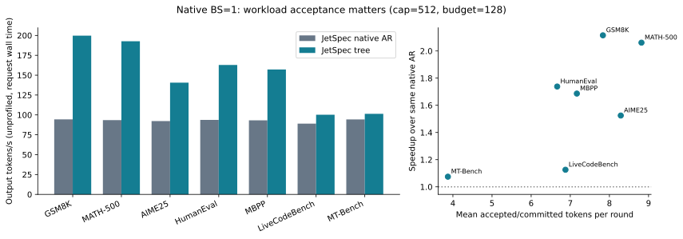
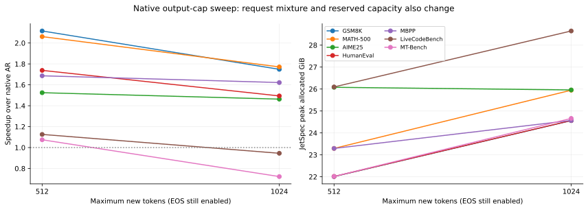
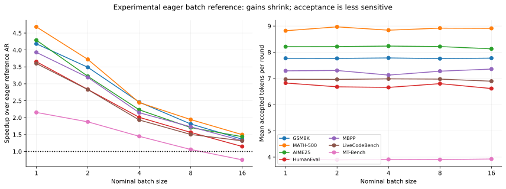
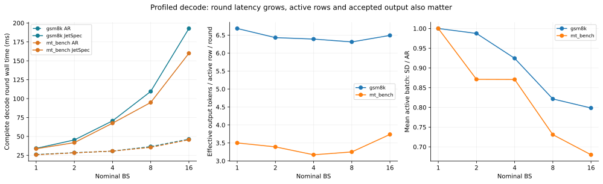
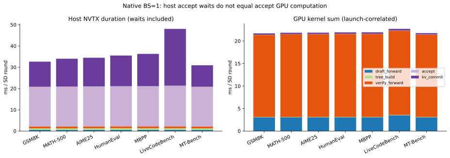
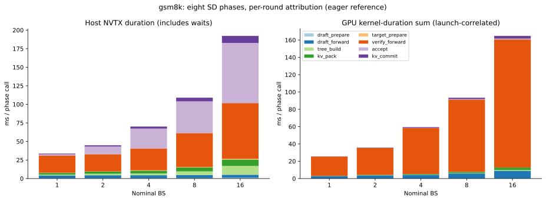
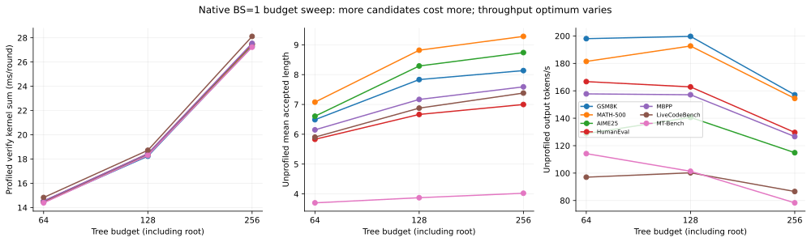
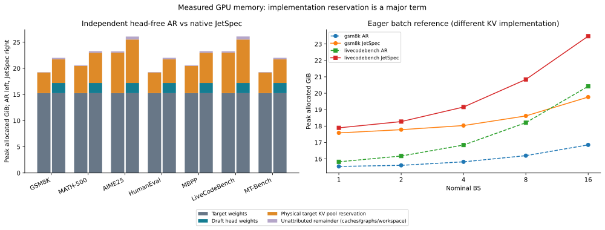
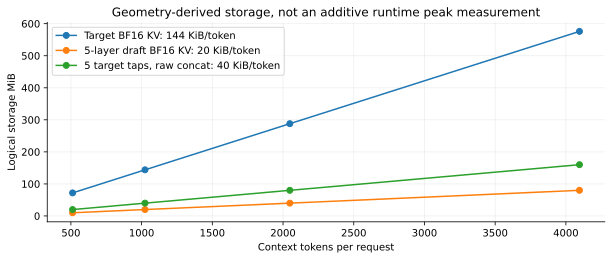
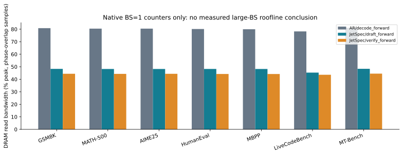

← Report index · 2026-11-04 / JetSpec profile
Parallel SD 从哪里获益，又在哪里失去收益？
RTX 5090 · Qwen3-8B BF16 · JetSpec 原生 engine 与实验性 batch reference
175 成功实验63 Nsight traces7 workloads仅整理已有测量
已经观察到的规律
接受长度决定 workload 差异原生 BS=1 的 GSM8K 为 2.12×，MT-Bench 约 1.07×。相同 budget 下，接受更多 token 才能摊薄整轮成本。
大 BS 的 verify 扩展更快eager reference 的 BS1→16，GSM8K / MT-Bench 约 90% 的 SD kernel 时长增量来自 verify。它不只是 CPU overhead。
大 budget 不是稳定更快64/128/256 改变 graph bucket 和实际 verify 节点；接受长度提高的收益，需要抵消 verify 和整轮 latency 的增长。
显存差异包含实现预留draft 权重约 1.95 GiB；target KV pool 另有布局导致的 36×预留放大。它不是 SD 或 paged attention 的必然成本。
1 · 测量边界与功能开关
吞吐来自未挂 profiler 的独立 benchmark，计入每次请求的 tokenization、prefill、decode 和 detokenization，排除 load/compile/warmup。原生 AR 是 JetSpec 自己的 compiled、CUDA-graphed、paged-KV 单 token decoder；不是 SGLang/vLLM。AR 单独进程不加载 draft head。
两种实现必须分开读：原生 optimized 只测 BS=1；BS=1/2/4/8/16 sweep 是真正 batched 的 eager SDPA / dense padded KV reference，所有 BS 都无 CUDA Graph。它能解释此实现的扩展规律，不能代表生产 SGLang 的 batch 性能。
原生 AR/draft/verify 使用 graph replay；测量区间零重新 capture。GPU accept 已开启，但 accept graph、nogather、GEMM weight fusion、FA2 关闭；tree attention 是 Triton paged kernel。CUDA Graph 缩小 host launch 成本，不意味着整个 SD cycle 都在 graph 内。
实验固定 greedy、thinking off；基础 tree depth=15、width=7、budget=128（含 root），基准输出 cap=512。原生输出长度 benchmark sweep 为 512/1024；budget sweep 为 64/128/256。profiling 使用短输入子集和 cap128/256，其时间不能与长 benchmark 混算 speedup。
2 · 原生 BS=1：吞吐与接受长度

独立 benchmark。右图只显示关联，不构成接受长度的单变量因果消融。 · PNG数学与对话的接受长度不同，因此“每轮能省掉多少 target decode”不同。更长输出 cap 也改变 EOS 截断和请求构成，已有结果不能单凭 token 上限推断线性收益。
输出上限 sweep：吞吐与显存预留

原生 512/1024 cap；EOS 保留，cap 不是固定输出长度，也改变 KV 预留容量。 · PNG3 · Batch scaling：整轮 latency、接受长度与活跃 batch

实验性 eager batch reference；不同 BS 输入子集和 padding 不完全一致。 · PNG
短 trace 的完整 decode 轮次，包含阶段间空隙与最后 GPU 尾部，排除 prefill。 · PNGMT-Bench 的 SD 完整轮次从 BS1 的 33.66 ms 增至 BS16 的 159.95 ms；AR 从 25.70 ms 增至 45.63 ms。effective accepted output 每活跃行每轮约 3.50→3.74，但 SD/AR 平均活跃 batch 比下降到约 0.68。完成序列退出、EOS 和批次尾部使“accept length 与 BS 无关”只适合作近似。
decode gain = effective output/active-row/SD-round × mean_active_BS_SD/mean_active_BS_AR × AR_round_ms/SD_round_ms
该等式已对同一 trace 的 token 数和 decode 窗口验证。不能用 cap512 benchmark 的接受率配 cap128 trace latency 计算精确 gain。
4 · Latency breakdown：CPU 段与 GPU 工作分开看
下图每个阶段都通过 CPU launch correlation 归因到 GPU；异步 kernel 即使在 NVTX pop 后才执行，也计入发起它的阶段。host NVTX 包含 API 和等待，不是纯 CPU 计算。host 与 GPU 两幅图不可相加。

原生 BS=1：主 forward graph 外仍有 tree/accept/KV 操作；accept 的 host 等待与自身 GPU 工作量差异很大。 · PNG 
GSM8K：GPU verify 的增加占主要增量；CPU accept 的增长可能包含等待先前 verify。 · PNGtree_build / accept / kv_commit 不在主要 forward graph 中，确有小 kernel、host 决策或同步边界。但长 accept CPU 范围常在等待前面异步发出的 verify；不能将这段等待全部归因成 accept 自身 GPU 算法。
5 · Tree budget sweep：更多候选与更贵的 verify

原生 graph bucket 对应 64/128/256；verify、accept 与 throughput 图来自不同计时协议，不能交叉组合成精确速度比。 · PNGverify 是对一组树节点做 causal/tree-masked extend：节点之间有 attention 依赖与祖先关系，既不是独立单 token decode，也不是普通全三角 prompt prefill。GEMM 的 token 维随节点数扩大，类似短 extend。固定 bucket 还会对实际节点补齐。
已测最小 budget=64；没有 budget16/32 的 GPU 结果。小 budget 不自动退化成单链：width、depth 和全局候选选择仍决定树的形状。只有实际选择的所有节点都落在一条路径上才是单链。
6 · AR 与 JetSpec 的 GPU memory

左图是 native 独立进程的 peak allocated 分解；remainder 未进一步归因，不能直接标成 hidden-state 或 graph 的独占占用。 · PNG
从模型几何推导的存储单位，表示不同候选 buffer 的规模；不代表这些 buffer 必然同时持久保存。 · PNGBF16 target 为 36 层、8 KV heads、head_dim128：逻辑 KV 为 144 KiB/token/request。5 层 draft 的逻辑 KV 为 20 KiB/token/request；5 个 target hidden taps 原始拼接为 40 KiB/token/request。这些 feature 可分块投影成 draft KV，不意味着必须长期保留全上下文的每层 hidden。
native cache 在各层使用不同的 global block IDs，同时每层分配覆盖整个 global-ID span 的 pool。36 层因而相对同 token capacity 的 layer-local 紧凑池多预留 36 倍；CPU 小模型布局检查观察到对应的层数倍放大。这里量化的是预留，没有修改布局并实测性能改善。
GSM8K：AR peak 19.27 GiB，JetSpec peak 22.01 GiB，差约 2.74 GiB。其中 draft 权重约 1.95 GiB，额外 target tree-capacity 的物理池预留约 0.55 GiB，其余来自未完全拆分的 cache、graph 和 workspace。reserved（allocator）与 allocated（活跃张量）不同，不能混用。
7 · GPU util 能说明什么？

已有硬件计数只覆盖 native BS=1。1 kHz phase-overlap 采样存在边界混合。 · PNGGPU busy 是“有 kernel 在执行的时间比例”；SM Active 是有 warp 活动的 SM 比例；Tensor Active、SM Issue、DRAM bandwidth 各自描述不同资源。高 GPU busy / SM Active 都不等于 compute bound。大 BS 是否 compute bound，仍需 FLOPs、实际 DRAM bytes、有效带宽/算力和 kernel 级证据。
现有证据支持：batch reference 的 verify kernel 工作增加、SD 的 GPU duty fraction 升高。它还不足以证明大 BS 已经 compute bound。roofline 可解释机制，但不能代替对这条执行路径的测量。MoE 的专家并集与通信、hybrid 的 recurrent-state commit 也会改变结论。
8 · 代表性 Nsight trace 与下一步
- 原生 GSM8K BS1：
optimized_gsm8k_bs1_trace_both_t256，观察 AR/draft/verify graph 与 tree accept。 - eager MT-Bench BS1 / BS4 / BS16：观察 verify 增长与 accept 同步等待；GSM8K BS1 / BS16 作为不同接受率对照。
- 原生 GSM8K budget64 / 128 / 256：观察 graph bucket 增加带来的 verify 成本。
大 .nsys-rep / SQLite 保存在本地 ignored profiles/，不提交 Git。原先整包约 2.1 GiB；按需取代表文件，不把整个 ZIP 放进报告仓库。代表 trace 清单 · 全部 trace 索引
后续先用同一个 SGLang Engine 跑 Qwen3-8B AR、DFlash、Domino、DSpark（固定与动态 verify 分开），独立环境保持原 JetSpec 可复现。固定输入和 backend，逐步扩大 BS/上下文/verify 宽度，再通过最有区分度的 nsys trace 分析主导成本。
正确性边界：原始 BF16 AR/tree token equality 未通过；已记录 eager 首个差异 token48（目标 logits 接近/打平）和 graph prompt token53。它与不同形状的浮点舍入一致，但不是 engine 正确性证明。本轮没有新增答案质量评测，也不宣称 bitwise 相同。